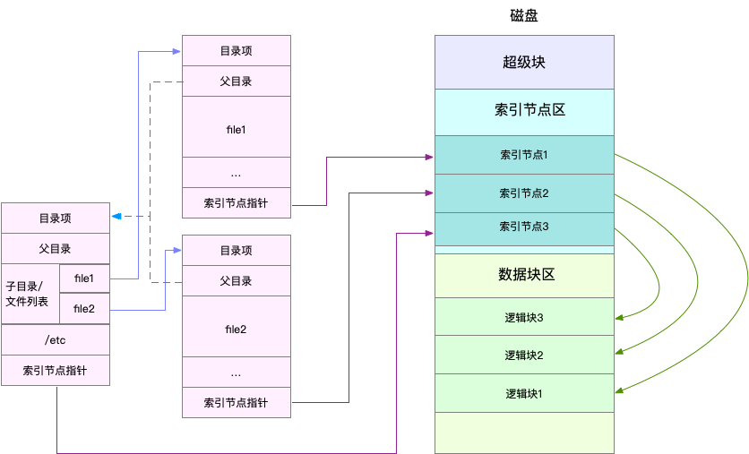
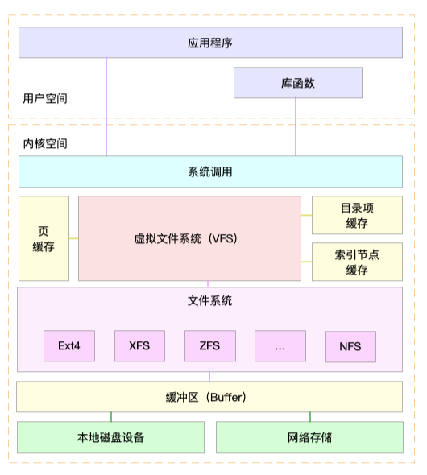
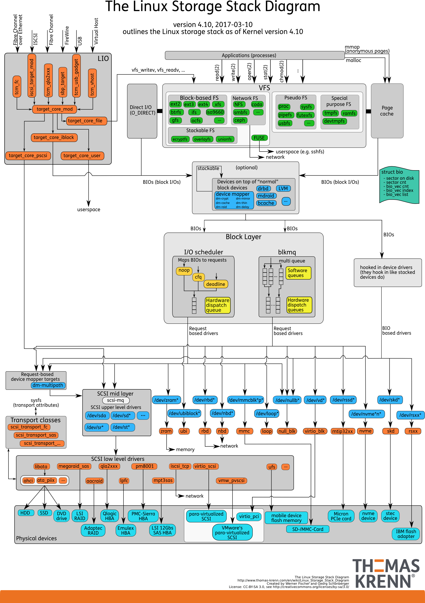
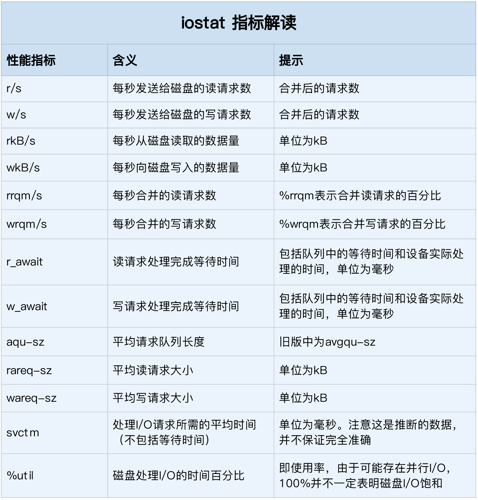
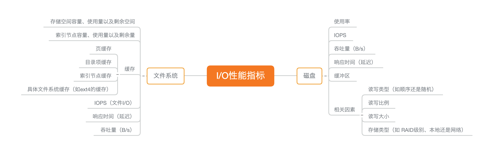
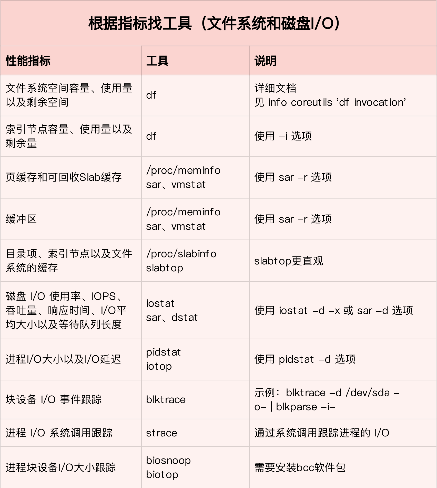
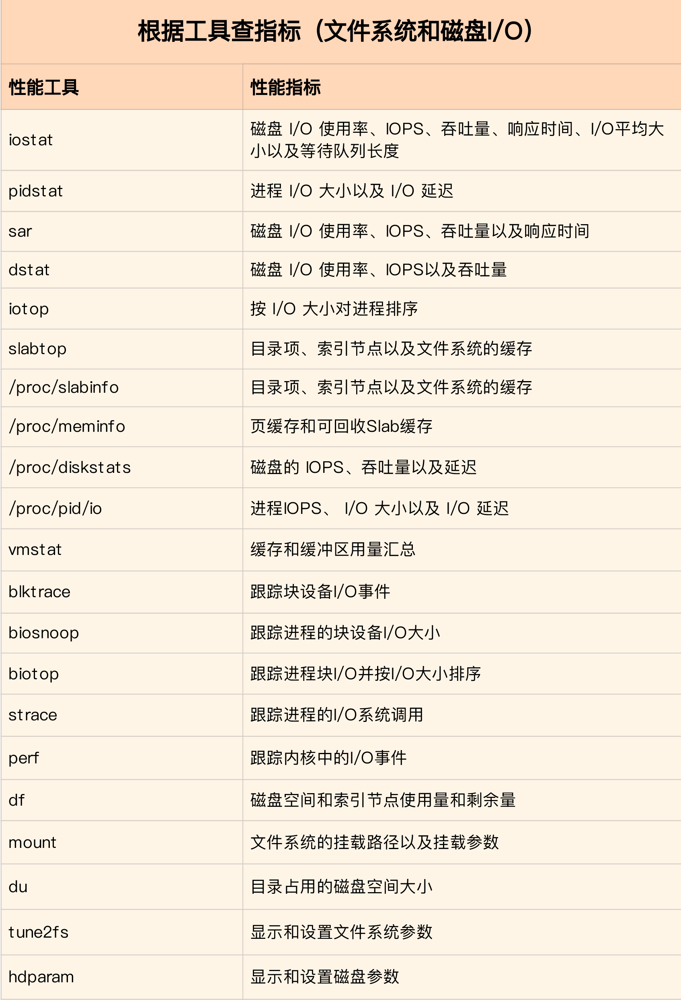
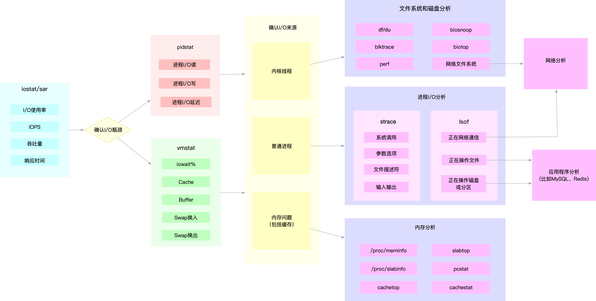

同 CPU、内存一样，磁盘和文件系统的管理，也是操作系统最核心的功能。
- 磁盘为系统提供了最基本的持久化存储。
- 文件系统则在磁盘的基础上，提供了一个用来管理文件的树状结构。
索引节点和目录项
文件系统，本身是对存储设备上的文件，进行组织管理的机制。组织方式不同，就会形成不同的文件系统。为了方便管理，Linux 文件系统为每个文件都分配两个数据结构，索引节点（index node）和目录项（directory entry）。它们主要用来记录文件的元信息和目录结构。
- 索引节点，简称为 inode，用来记录文件的元数据，比如 inode 编号、文件大小、访问权限、修改日期、数据的位置等。索引节点和文件一一对应，它跟文件内容一样，都会被持久化存储到磁盘中。所以记住，索引节点同样占用磁盘空间。
- 目录项，简称为 dentry，用来记录文件的名字、索引节点指针以及与其他目录项的关联关系。多个关联的目录项，就构成了文件系统的目录结构。不过，不同于索引节点，目录项是由内核维护的一个内存数据结构，所以通常也被叫做目录项缓存。
换句话说，索引节点是每个文件的唯一标志，而目录项维护的正是文件系统的树状结构。目录项和索引节点的关系是多对一，可以简单理解为，一个文件可以有多个别名。
举个例子，通过硬链接为文件创建的别名，就会对应不同的目录项，不过这些目录项本质上还是链接同一个文件，所以，它们的索引节点相同。
磁盘读写的最小单位是扇区，然而扇区只有 512B 大小，如果每次都读写这么小的单位，效率一定很低。所以，文件系统又把连续的扇区组成了逻辑块，然后每次都以逻辑块为最小单元，来管理数据。常见的逻辑块大小为 4KB，也就是由连续的 8 个扇区组成。
可以查看下面对的图，来理解目录项，索引节点以及文件数据的关系：

需要注意的是：
目录项本身就是一个内存缓存，而索引节点则是存储在磁盘中的数据。在前面的 Buffer 和 Cache 原理中提到过，为了协调慢速磁盘与快速 CPU 的性能差异，文件内容会缓存到页缓存 Cache 中。
磁盘在执行文件系统格式化时，会被分成三个存储区域，超级块、索引节点区和数据块区。其中：
- 超级块，存储整个文件系统的状态。
- 索引节点区，用来存储索引节点。
- 数据块区，则用来存储文件数据。
虚拟文件系统
目录项、索引节点、逻辑块以及超级块，构成了 Linux 文件系统的四大基本要素。不过Linux 内核为了支持各种不同的文件系统，在用户进程和文件系统的中间，又引入了一个抽象层，也就是虚拟文件系统 VFS（Virtual File System）。
VFS 定义了一组所有文件系统都支持的数据结构和标准接口。这样，用户进程和内核中的其他子系统，只需要跟 VFS 提供的统一接口进行交互就可以了，而不需要再关心底层各种文件系统的实现细节。
可以查看下面的 Linux 文件系统架构图，帮助理解系统调用，VFS，缓存，文件系统以及块存储之间的关系。

通过这张图，可以看到，在 VFS 的下方，Linux 支持各种各样的文件系统，如 Ext4、XFS、NFS 等等。按照存储位置的不同，这些文件系统可以分为三类。
第一类是基于磁盘的文件系统，也就是把数据直接存储在计算机本地挂载的磁盘中。常见的 Ext4、XFS、OverlayFS 等，都是这类文件系统。
第二类是基于内存的文件系统，也就是我们常说的虚拟文件系统。这类文件系统，不需要任何磁盘分配存储空间，但会占用内存。我们经常用到的 /proc 文件系统，其实就是一种最常见的虚拟文件系统。此外，/sys 文件系统也属于这一类，主要向用户空间导出层次化的内核对象。
第三类是网络文件系统，也就是用来访问其他计算机数据的文件系统，比如 NFS、SMB、iSCSI 等。
这些文件系统，要先挂载到 VFS 目录树中的某个子目录（称为挂载点），然后才能访问其中的文件。拿第一类，也就是基于磁盘的文件系统为例，在安装系统时，要先挂载一个根目录（/），在根目录下再把其他文件系统（比如其他的磁盘分区、/proc 文件系统、/sys 文件系统、NFS 等）挂载进来。
文件系统 I/O
文件系统挂载到挂载点后，就能通过挂载点，再去访问它管理的文件了。VFS 提供了一组标准的文件访问接口。这些接口以系统调用的方式，提供给应用程序使用。
文件读写方式的各种差异，导致 I/O 的分类多种多样。最常见的有，缓冲与非缓冲 I/O、直接与非直接 I/O、阻塞与非阻塞 I/O、同步与异步 I/O 等。
根据是否利用标准库缓存，可以把文件 I/O 分为缓冲 I/O 与非缓冲 I/O。
- 缓冲 I/O，是指利用标准库缓存来加速文件的访问，而标准库内部再通过系统调度访问文件。
非缓冲 I/O，是指直接通过系统调用来访问文件，不再经过标准库缓存。
这里所说的“缓冲”，是指标准库内部实现的缓存。比方说，很多程序遇到换行时才真正输出，而换行前的内容，其实就是被标准库暂时缓存了起来。无论缓冲 I/O 还是非缓冲 I/O，它们最终还是要经过系统调用来访问文件。而根据上一节内容，系统调用后，还会通过页缓存，来减少磁盘的 I/O 操作。
根据是否利用操作系统的页缓存，可以把文件 I/O 分为直接 I/O 与非直接 I/O。
- 直接 I/O，是指跳过操作系统的页缓存，直接跟文件系统交互来访问文件。
非直接 I/O 正好相反，文件读写时，先要经过系统的页缓存，然后再由内核或额外的系统调用，真正写入磁盘。
想要实现直接 I/O，需要你在系统调用中，指定 O_DIRECT 标志。如果没有设置过，默认的是非直接 I/O。直接 I/O、非直接 I/O，本质上还是和文件系统交互。在数据库等场景中，可能会看到，跳过文件系统读写磁盘的情况，也就是通常所说的裸 I/O。
根据应用程序是否阻塞自身运行，可以把文件 I/O 分为阻塞 I/O 和非阻塞 I/O：
- 所谓阻塞 I/O，是指应用程序执行 I/O 操作后，如果没有获得响应，就会阻塞当前线程，自然就不能执行其他任务。
所谓非阻塞 I/O，是指应用程序执行 I/O 操作后，不会阻塞当前的线程，可以继续执行其他的任务，随后再通过轮询或者事件通知的形式，获取调用的结果。
比方说，访问管道或者网络套接字时，设置 O_NONBLOCK 标志，就表示用非阻塞方式访问；而如果不做任何设置，默认的就是阻塞访问。
根据是否等待响应结果，可以把文件 I/O 分为同步和异步 I/O：
- 所谓同步 I/O，是指应用程序执行 I/O 操作后，要一直等到整个 I/O 完成后，才能获得 I/O 响应。
所谓异步 I/O，是指应用程序执行 I/O 操作后，不用等待完成和完成后的响应，而是继续执行就可以。等到这次 I/O 完成后，响应会用事件通知的方式，告诉应用程序。
举个例子，在操作文件时，如果设置了 O_SYNC 或者 O_DSYNC 标志，就代表同步 I/O。如果设置了 O_DSYNC，就要等文件数据写入磁盘后，才能返回；而 O_SYNC，则是在 O_DSYNC 基础上，要求文件元数据也要写入磁盘后，才能返回。
再比如，在访问管道或者网络套接字时，设置了 O_ASYNC 选项后，相应的 I/O 就是异步 I/O。这样，内核会再通过 SIGIO 或者 SIGPOLL，来通知进程文件是否可读写。
文件系统性能
容量
使用 df 命令来查看系统容量，如下：
$ df -h /dev/sda1
Filesystem Size Used Avail Use% Mounted on
/dev/sda1 29G 3.1G 26G 11% /
有时候，明明碰到了空间不足的问题，可是用 df 查看磁盘空间后，却发现剩余空间还有很多。可能是因为索引节点区被耗尽，因为磁盘在格式化的时候，索引节点容量已经固定，如果有大量的小文件导致索引节点区容量不足，会导致这种情况，查看索引节点区容量方式如下：
$ df -i /dev/sda1
Filesystem Inodes IUsed IFree IUse% Mounted on
/dev/sda1 3870720 157460 3713260 5% /
缓存
可以用 free 或 vmstat，来观察页缓存的大小。复习一下，free 输出的 Cache，是页缓存和可回收 Slab 缓存的和，你可以从 /proc/meminfo ，直接得到它们的大小：
$ cat /proc/meminfo | grep -E "SReclaimable|Cached"
Cached: 748316 kB
SwapCached: 0 kB
SReclaimable: 179508 kB
内核使用 Slab 机制，管理目录项和索引节点的缓存。/proc/meminfo 只给出了 Slab 的整体大小，具体到每一种 Slab 缓存，还要查看 /proc/slabinfo 这个文件。
比如，运行下面的命令，你就可以得到，所有目录项和各种文件系统索引节点的缓存情况：
root@iZ94lcu45k0Z:~# cat /proc/slabinfo | grep -E '^#|dentry|inode'
# name <active_objs> <num_objs> <objsize> <objperslab> <pagesperslab> : tunables <limit> <batchcount> <sharedfactor> : slabdata <active_slabs> <num_slabs> <sharedavail>
btrfs_inode 0 0 1144 14 4 : tunables 0 0 0 : slabdata 0 0 0
ufs_inode_cache 0 0 808 10 2 : tunables 0 0 0 : slabdata 0 0 0
qnx4_inode_cache 0 0 680 12 2 : tunables 0 0 0 : slabdata 0 0 0
hfs_inode_cache 0 0 832 19 4 : tunables 0 0 0 : slabdata 0 0 0
minix_inode_cache 0 0 672 12 2 : tunables 0 0 0 : slabdata 0 0 0
ntfs_big_inode_cache 0 0 960 8 2 : tunables 0 0 0 : slabdata 0 0 0
ntfs_inode_cache 0 0 296 13 1 : tunables 0 0 0 : slabdata 0 0 0
xfs_inode 0 0 960 8 2 : tunables 0 0 0 : slabdata 0 0 0
mqueue_inode_cache 8 8 960 8 2 : tunables 0 0 0 : slabdata 1 1 0
fuse_inode 0 0 832 19 4 : tunables 0 0 0 : slabdata 0 0 0
ecryptfs_inode_cache 0 0 1024 8 2 : tunables 0 0 0 : slabdata 0 0 0
fat_inode_cache 0 0 744 11 2 : tunables 0 0 0 : slabdata 0 0 0
squashfs_inode_cache 0 0 704 11 2 : tunables 0 0 0 : slabdata 0 0 0
ext4_inode_cache 41294 41325 1088 15 4 : tunables 0 0 0 : slabdata 2755 2755 0
hugetlbfs_inode_cache 13 13 624 13 2 : tunables 0 0 0 : slabdata 1 1 0
sock_inode_cache 184 198 704 11 2 : tunables 0 0 0 : slabdata 18 18 0
shmem_inode_cache 1507 1507 712 11 2 : tunables 0 0 0 : slabdata 137 137 0
proc_inode_cache 1224 1224 680 12 2 : tunables 0 0 0 : slabdata 102 102 0
inode_cache 28175 28275 608 13 2 : tunables 0 0 0 : slabdata 2175 2175 0
dentry 88284 88284 192 21 1 : tunables 0 0 0 : slabdata 4204 4204 0
具体含义可以通过 man slabinfo 得到，在实际性能分析中，更常使用 slabtop ，来找到占用内存最多的缓存类型。
# 按下c按照缓存大小排序，按下a按照活跃对象数排序
$ slabtop
Active / Total Objects (% used) : 277970 / 358914 (77.4%)
Active / Total Slabs (% used) : 12414 / 12414 (100.0%)
Active / Total Caches (% used) : 83 / 135 (61.5%)
Active / Total Size (% used) : 57816.88K / 73307.70K (78.9%)
Minimum / Average / Maximum Object : 0.01K / 0.20K / 22.88K
OBJS ACTIVE USE OBJ SIZE SLABS OBJ/SLAB CACHE SIZE NAME
69804 23094 0% 0.19K 3324 21 13296K dentry
16380 15854 0% 0.59K 1260 13 10080K inode_cache
58260 55397 0% 0.13K 1942 30 7768K kernfs_node_cache
485 413 0% 5.69K 97 5 3104K task_struct
1472 1397 0% 2.00K 92 16 2944K kmalloc-2048
上图中，目录项和索引节点占用了最多的 Slab 缓存。不过它们占用的内存其实并不大，加起来也只有 23MB 左右。
磁盘 I/O 工作原理
原文：
基础篇：Linux 磁盘I/O是怎么工作的（上）
基础篇：Linux 磁盘I/O是怎么工作的（下）
磁盘类型
根据存储介质分类
磁盘是可以持久化存储的设备，根据存储介质的不同，常见磁盘可以分为两类：机械磁盘和固态磁盘。
机械磁盘，也称为硬盘驱动器 （Hard Disk Driver），通常缩写为 HDD。机械磁盘主要由盘片和读写磁头组成，数据就存储在盘片的环状磁道中。在读写数据前，需要移动读写磁头，定位到数据所在的磁道，然后才能访问数据。
显然，如果 I/O 请求刚好连续，那就不需要磁道寻址，自然可以获得最佳性能。这其实就是我们熟悉的，连续 I/O 的工作原理。与之相对应的，当然就是随机 I/O，它需要不停地移动磁头，来定位数据位置，所以读写速度就会比较慢。
- 固态磁盘 （Solid State Disk），通常缩写为 SSD，由固态电子元器件组成。固态磁盘不需要磁道寻址，所以，不管是连续 I/O，还是随机 I/O 的性能，都比机械磁盘要好得多。
其实，无论机械磁盘，还是固态磁盘，相同磁盘的随机 I/O 都要比连续 I/O 慢很多，因为：
- 对机械磁盘来说，由于随机 I/O 需要更多的磁头寻道和盘片旋转，它的性能自然要比连续 I/O 慢。
- 对固态磁盘来说，虽然它的随机性能比机械硬盘好很多，但同样存在“先擦除再写入”的限制。随机读写会导致大量的垃圾回收，所以相对应的，随机 I/O 的性能比起连续 I/O 来，也还是差了很多。
- 连续 I/O 还可以通过预读的方式，来减少 I/O 请求的次数，这也是其性能优异的一个原因。很多性能优化的方案，也都会从这个角度出发，来优化 I/O 性能。
此外，机械磁盘和固态磁盘还分别有一个最小的读写单位。机械磁盘的最小读写单位是扇区，一般大小为 512 字节。而固态磁盘的最小读写单位是页，通常大小是 4KB、8KB 等。
根据接口分类
按照接口来分类，比如可以把硬盘分为 IDE（Integrated Drive Electronics）、SCSI（Small Computer System Interface） 、SAS（Serial Attached SCSI） 、SATA（Serial ATA） 、FC（Fibre Channel） 等。
不同的接口，往往分配不同的设备名称。比如， IDE 设备会分配一个 hd 前缀的设备名，SCSI 和 SATA 设备会分配一个 sd 前缀的设备名。如果是多块同类型的磁盘，就会按照 a、b、c 等的字母顺序来编号。
按照使用方式
当把磁盘接入服务器后，按照不同的使用方式，又可以把它们划分为多种不同的架构。
最简单的，就是直接作为独立磁盘设备来使用。这些磁盘，往往还会根据需要，划分为不同的逻辑分区，每个分区再用数字编号。比如我们前面多次用到的 /dev/sda ，还可以分成两个分区 /dev/sda1 和 /dev/sda2。
另一个比较常用的架构，是把多块磁盘组合成一个逻辑磁盘，构成冗余独立磁盘阵列，也就是 RAID（Redundant Array of Independent Disks），从而可以提高数据访问的性能，并且增强数据存储的可靠性。
最后一种架构，是把这些磁盘组合成一个网络存储集群，再通过 NFS、SMB、iSCSI 等网络存储协议，暴露给服务器使用。
其实在 Linux 中，磁盘实际上是作为一个块设备来管理的，也就是以块为单位读写数据，并且支持随机读写。每个块设备都会被赋予两个设备号，分别是主、次设备号。主设备号用在驱动程序中，用来区分设备类型；而次设备号则是用来给多个同类设备编号。
通用块层
同虚拟文件系统 VFS 类似，为了减小不同块设备的差异带来的影响，Linux 通过一个统一的通用块层，来管理各种不同的块设备。通用块层，其实是处在文件系统和磁盘驱动中间的一个块设备抽象层。它主要有两个功能 。
- 第一个功能跟虚拟文件系统的功能类似。向上，为文件系统和应用程序，提供访问块设备的标准接口；向下，把各种异构的磁盘设备抽象为统一的块设备，并提供统一框架来管理这些设备的驱动程序。
- 第二个功能，通用块层还会给文件系统和应用程序发来的 I/O 请求排队，并通过重新排序、请求合并等方式，提高磁盘读写的效率。
其中，对 I/O 请求排序的过程，也就是我们熟悉的 I/O 调度。事实上，Linux 内核支持四种 I/O 调度算法，分别是 NONE、NOOP、CFQ 以及 DeadLine。
I/O 栈
我们可以把 Linux 存储系统的 I/O 栈，由上到下分为三个层次，分别是文件系统层、通用块层和设备层。这三个 I/O 层的关系如下图所示，这其实也是 Linux 存储系统的 I/O 栈全景图。

根据这张 I/O 栈的全景图，我们可以更清楚地理解，存储系统 I/O 的工作原理。
- 文件系统层，包括虚拟文件系统和其他各种文件系统的具体实现。它为上层的应用程序，提供标准的文件访问接口；对下会通过通用块层，来存储和管理磁盘数据。
- 通用块层，包括块设备 I/O 队列和 I/O 调度器。它会对文件系统的 I/O 请求进行排队，再通过重新排序和请求合并，然后才要发送给下一级的设备层。
- 设备层，包括存储设备和相应的驱动程序，负责最终物理设备的 I/O 操作。
存储系统的 I/O ，通常是整个系统中最慢的一环。所以， Linux 通过多种缓存机制来优化 I/O 效率。比方说，为了优化文件访问的性能，会使用页缓存、索引节点缓存、目录项缓存等多种缓存机制，以减少对下层块设备的直接调用。同样，为了优化块设备的访问效率，会使用缓冲区，来缓存块设备的数据。
磁盘性能指标
说到磁盘性能的衡量标准，必须要提到五个常见指标，也就是我们经常用到的，使用率、饱和度、IOPS、吞吐量以及响应时间等。这五个指标，是衡量磁盘性能的基本指标。
- 使用率，是指磁盘处理 I/O 的时间百分比。过高的使用率（比如超过 80%），通常意味着磁盘 I/O 存在性能瓶颈。
- 饱和度，是指磁盘处理 I/O 的繁忙程度。过高的饱和度，意味着磁盘存在严重的性能瓶颈。当饱和度为 100% 时，磁盘无法接受新的 I/O 请求。
- IOPS（Input/Output Per Second），是指每秒的 I/O 请求数。
- 吞吐量，是指每秒的 I/O 请求大小。
- 响应时间，是指 I/O 请求从发出到收到响应的间隔时间。
不要孤立地去比较某一指标，而要结合读写比例、I/O 类型（随机还是连续）以及 I/O 的大小，综合来分析。
举个例子，在数据库、大量小文件等这类随机读写比较多的场景中，IOPS 更能反映系统的整体性能；
而在多媒体等顺序读写较多的场景中，吞吐量才更能反映系统的整体性能。一般来说，我们在为应用程序的服务器选型时，要先对磁盘的 I/O 性能进行基准测试，以便可以准确评估，磁盘性能是否可以满足应用程序的需求。
磁盘 I/O 观测
iostat 是最常用的磁盘 I/O 性能观测工具，它提供了每个磁盘的使用率、IOPS、吞吐量等各种常见的性能指标，当然，这些指标实际上来自 /proc/diskstats。
# -d -x表示显示所有磁盘I/O的指标
$ iostat -d -x 1
Device r/s w/s rkB/s wkB/s rrqm/s wrqm/s %rrqm %wrqm r_await w_await aqu-sz rareq-sz wareq-sz svctm %util
loop0 0.00 0.00 0.00 0.00 0.00 0.00 0.00 0.00 0.00 0.00 0.00 0.00 0.00 0.00 0.00
loop1 0.00 0.00 0.00 0.00 0.00 0.00 0.00 0.00 0.00 0.00 0.00 0.00 0.00 0.00 0.00
sda 0.00 0.00 0.00 0.00 0.00 0.00 0.00 0.00 0.00 0.00 0.00 0.00 0.00 0.00 0.00
sdb 0.00 0.00 0.00 0.00 0.00 0.00 0.00 0.00 0.00 0.00 0.00 0.00 0.00 0.00 0.00
iostat 提供了非常丰富的性能指标。第一列的 Device 表示磁盘设备的名字，其他各列指标，虽然数量较多，但是每个指标的含义都很重要，如下图：

这些指标中，你要注意：
- %util ，就是我们前面提到的磁盘 I/O 使用率；
- r/s+ w/s ，就是 IOPS；
- rkB/s+wkB/s ，就是吞吐量；
- r_await+w_await ，就是响应时间。
在观测指标时，也别忘了结合请求的大小（ rareq-sz 和 wareq-sz）一起分析。
进程 I/O 观测
除了每块磁盘的 I/O 情况，每个进程的 I/O 情况也是我们需要关注的重点。
上面提到的 iostat 只提供磁盘整体的 I/O 性能数据，缺点在于，并不能知道具体是哪些进程在进行磁盘读写。要观察进程的 I/O 情况，你还可以使用 pidstat 和 iotop 这两个工具。pidstat 是我们的老朋友了，这里我就不再啰嗦它的功能了。给它加上 -d 参数，你就可以看到进程的 I/O 情况，如下所示：
$ pidstat -d 1
13:39:51 UID PID kB_rd/s kB_wr/s kB_ccwr/s iodelay Command
13:39:52 102 916 0.00 4.00 0.00 0 rsyslogd
从 pidstat 的输出你能看到，它可以实时查看每个进程的 I/O 情况，包括下面这些内容。
- 用户 ID（UID）和进程 ID（PID） 。
-= 每秒读取的数据大小（kB_rd/s） ，单位是 KB。 - 每秒发出的写请求数据大小（kB_wr/s） ，单位是 KB。
- 每秒取消的写请求数据大小（kB_ccwr/s） ，单位是 KB。
- 块 I/O 延迟（iodelay），包括等待同步块 I/O 和换入块 I/O 结束的时间，单位是时钟周期。
除了可以用 pidstat 实时查看，根据 I/O 大小对进程排序，也是性能分析中一个常用的方法。这一点，我推荐另一个工具， iotop。它是一个类似于 top 的工具，你可以按照 I/O 大小对进程排序，然后找到 I/O 较大的那些进程。
iotop 的输出如下所示：
$ iotop
Total DISK READ : 0.00 B/s | Total DISK WRITE : 7.85 K/s
Actual DISK READ: 0.00 B/s | Actual DISK WRITE: 0.00 B/s
TID PRIO USER DISK READ DISK WRITE SWAPIN IO> COMMAND
15055 be/3 root 0.00 B/s 7.85 K/s 0.00 % 0.00 % systemd-journald
案例分析（进程狂打日志）
有时候当你使用 top 进程发现系统的 iowait 异常，内存大量花销在 Cache/Buffer 时，就应该往 io 方面的问题考虑，如下：
# 按1切换到每个CPU的使用情况
$ top
top - 14:43:43 up 1 day, 1:39, 2 users, load average: 2.48, 1.09, 0.63
Tasks: 130 total, 2 running, 74 sleeping, 0 stopped, 0 zombie
%Cpu0 : 0.7 us, 6.0 sy, 0.0 ni, 0.7 id, 92.7 wa, 0.0 hi, 0.0 si, 0.0 st
%Cpu1 : 0.0 us, 0.3 sy, 0.0 ni, 92.3 id, 7.3 wa, 0.0 hi, 0.0 si, 0.0 st
KiB Mem : 8169308 total, 747684 free, 741336 used, 6680288 buff/cache
KiB Swap: 0 total, 0 free, 0 used. 7113124 avail Mem
PID USER PR NI VIRT RES SHR S %CPU %MEM TIME+ COMMAND
18940 root 20 0 656108 355740 5236 R 6.3 4.4 0:12.56 python
1312 root 20 0 236532 24116 9648 S 0.3 0.3 9:29.80 python3
观察 top 的输出，会发现，CPU0 的使用率非常高，它的系统 CPU 使用率（sys%）为 6%，而 iowait 超过了 90%。这说明 CPU0 上，可能正在运行 I/O 密集型的进程。
接着查看进程部分的 CPU 使用情况。你会发现， python 进程的 CPU 使用率已经达到了 6%，而其余进程的 CPU 使用率都比较低，不超过 0.3%。看起来 python 是个可疑进程，记下 python 进程的 PID 号 18940，稍后分析。
最后再看内存的使用情况，总内存 8G，剩余内存只有 730 MB，而 Buffer/Cache 占用内存高达 6GB 之多，这说明内存主要被缓存占用。虽然大部分缓存可回收，我们还是得了解下缓存的去处，确认缓存使用都是合理的。
我们再使用 iostat 命令来观察 I/O 情况：
# -d表示显示I/O性能指标，-x表示显示扩展统计（即所有I/O指标）
$ iostat -x -d 1
Device r/s w/s rkB/s wkB/s rrqm/s wrqm/s %rrqm %wrqm r_await w_await aqu-sz rareq-sz wareq-sz svctm %util
loop0 0.00 0.00 0.00 0.00 0.00 0.00 0.00 0.00 0.00 0.00 0.00 0.00 0.00 0.00 0.00
sdb 0.00 0.00 0.00 0.00 0.00 0.00 0.00 0.00 0.00 0.00 0.00 0.00 0.00 0.00 0.00
sda 0.00 64.00 0.00 32768.00 0.00 0.00 0.00 0.00 0.00 7270.44 1102.18 0.00 512.00 15.50 99.20
观察 iostat 的最后一列，会看到，磁盘 sda 的 I/O 使用率已经高达 99%，很可能已经接近 I/O 饱和。
再看前面的各个指标，每秒写磁盘请求数是 64 ，写大小是 32 MB，写请求的响应时间为 7 秒，而请求队列长度则达到了 1100。
超慢的响应时间和特长的请求队列长度，进一步验证了 I/O 已经饱和的猜想。此时，sda 磁盘已经遇到了严重的性能瓶颈。
再继续使用 pidstat 或者 iotop 来观察进程的 I/O 情况，使用 pidstat 加上 -d 参数，就可以显示每个进程的 I/O 情况：
$ pidstat -d 1
15:08:35 UID PID kB_rd/s kB_wr/s kB_ccwr/s iodelay Command
15:08:36 0 18940 0.00 45816.00 0.00 96 python
15:08:36 UID PID kB_rd/s kB_wr/s kB_ccwr/s iodelay Command
15:08:37 0 354 0.00 0.00 0.00 350 jbd2/sda1-8
15:08:37 0 18940 0.00 46000.00 0.00 96 python
15:08:37 0 20065 0.00 0.00 0.00 1503 kworker/u4:2
从 pidstat 的输出，你可以发现，只有 python 进程的写比较大，而且每秒写的数据超过 45 MB，比上面 iostat 发现的 32MB 的结果还要大。很明显，正是 python 进程导致了 I/O 瓶颈。
接下来，因为文件读写涉及到系统调用，我们在终端中运行 strace 命令，并通过 -p 18940 指定 python 进程的 PID 号查看：
$ strace -p 18940
strace: Process 18940 attached
...
mmap(NULL, 314576896, PROT_READ|PROT_WRITE, MAP_PRIVATE|MAP_ANONYMOUS, -1, 0) = 0x7f0f7aee9000
mmap(NULL, 314576896, PROT_READ|PROT_WRITE, MAP_PRIVATE|MAP_ANONYMOUS, -1, 0) = 0x7f0f682e8000
write(3, "2018-12-05 15:23:01,709 - __main"..., 314572844
) = 314572844
munmap(0x7f0f682e8000, 314576896) = 0
write(3, "\n", 1) = 1
munmap(0x7f0f7aee9000, 314576896) = 0
close(3) = 0
stat("/tmp/logtest.txt.1", {st_mode=S_IFREG|0644, st_size=943718535, ...}) = 0
从上面的 write 系统调用可以看出，进程向文件描述符编号为3的文件中，写入了 300MB 的数据，从 stat 的系统调用中，可以看到，它正在获取 /tmp/logtest.txt.1 的状态。 这种“点 + 数字格式”的文件，在日志回滚中非常常见。我们可以猜测，这是第一个日志回滚文件，而正在写的日志文件路径，则是 /tmp/logtest.txt。
接下来，我们在终端中运行下面的 lsof 命令，看看进程 18940 都打开了哪些文件：
$ lsof -p 18940
COMMAND PID USER FD TYPE DEVICE SIZE/OFF NODE NAME
python 18940 root cwd DIR 0,50 4096 1549389 /
python 18940 root rtd DIR 0,50 4096 1549389 /
…
python 18940 root 2u CHR 136,0 0t0 3 /dev/pts/0
python 18940 root 3w REG 8,1 117944320 303 /tmp/logtest.txt
其中：
- FD 示文件描述符号
- TYPE 表示文件类型
- NAME 表示文件路径
至此，感觉找到了狂写磁盘的进程，就是进程ID为 18940 的 Python 进程。
I/O 性能问题定位
问题定位得从量化的指标开始，从 CPU，内存一样，学习指标，掌握工具，定位问题。文件系统和磁盘 I/O 的性能指标都很有用，需要熟练掌握们才能应对千奇百怪的问题，为了方便记忆复习，偷了一张图，如下：

性能工具
掌握文件系统和磁盘 I/O 的性能指标后，还要知道，怎样去获取这些指标，也就是搞明白工具的使用问题。常用的工具及其能做的事情整理如下：
df，它既可以查看文件系统数据的空间容量，也可以查看索引节点的容量。至于文件系统缓存，可以通过/proc/meminfo、/proc/slabinfo以及slabtop等各种来源，观察页缓存、目录项缓存、索引节点缓存以及具体文件系统的缓存情况。iostat和pidstat可以查看磁盘和进程的 I/O 情况，都是最常用的 I/O 性能分析工具。通过iostat，我们可以得到磁盘的 I/O 使用率、吞吐量、响应时间以及 IOPS 等性能指标；而通过pidstat，则可以观察到进程的 I/O 吞吐量以及块设备 I/O 的延迟等。如果用
top查看系统的 CPU 使用情况，发现iowait比较高；然后可以用iostat发现了磁盘的 I/O 使用率瓶颈，然后可以用pidstat找出了大量 I/O 的进程；最后，通过strace和lsof，我们找出了问题进程正在读写的文件，并最终锁定性能问题的来源。
查看性能指标时，我们可以有两种思路，一种是以需要的性能触发，找到相应的工具查看，如下图：

另一种是，利用手头现有的工具得到尽可能想要的，如下图：

一般情况下，多种性能指标间都有一定的关联性，不要完全孤立的看待他们。想弄清楚性能指标的关联性，就要通晓每种性能指标的工作原理。为了缩小排查范围，一般通常会先运行那几个支持指标较多的工具，如 iostat、vmstat、pidstat 等。然后再根据观察到的现象，结合系统和应用程序的原理，寻找下一步的分析方向，这个分析过程一般可以参考下图：

I/O 基准测试
fio 是最常用的文件系统和磁盘 I/O 性能基准测试工具。它提供了大量的可定制化选项，可以用来测试，裸盘或者文件系统在各种场景下的 I/O 性能，包括了不同块大小、不同 I/O 引擎以及是否使用缓存等场景。
fio 的安装比较简单，你可以执行下面的命令来安装它，安装完成后，就可以执行 man fio 查询它的使用方法。：
# Ubuntu
apt-get install -y fio
# CentOS
yum install -y fio
fio 的选项非常多，下面列出一些最常用的选项。这些常见场景包括随机读、随机写、顺序读以及顺序写等，你可以执行下面这些命令来测试：
# 随机读
fio -name=randread -direct=1 -iodepth=64 -rw=randread -ioengine=libaio -bs=4k -size=1G -numjobs=1 -runtime=1000 -group_reporting -filename=/dev/sdb
# 随机写
fio -name=randwrite -direct=1 -iodepth=64 -rw=randwrite -ioengine=libaio -bs=4k -size=1G -numjobs=1 -runtime=1000 -group_reporting -filename=/dev/sdb
# 顺序读
fio -name=read -direct=1 -iodepth=64 -rw=read -ioengine=libaio -bs=4k -size=1G -numjobs=1 -runtime=1000 -group_reporting -filename=/dev/sdb
# 顺序写
fio -name=write -direct=1 -iodepth=64 -rw=write -ioengine=libaio -bs=4k -size=1G -numjobs=1 -runtime=1000 -group_reporting -filename=/dev/sdb
参数解释如下：
- direct，表示是否跳过系统缓存。上面示例中，设置的 1 ，就表示跳过系统缓存。
- iodepth，表示使用异步 I/O（asynchronous I/O，简称 AIO）时，同时发出的 I/O 请求上限。在上面的示例中，设置的是 64。
- rw，表示 I/O 模式。我的示例中， read/write 分别表示顺序读 / 写，而 randread/randwrite 则分别表示随机读 / 写。
- ioengine，表示 I/O 引擎，它支持同步（sync）、异步（libaio）、内存映射（mmap）、网络（net）等各种 I/O 引擎。上面示例中，设置的 libaio 表示使用异步 I/O。
- bs，表示 I/O 的大小。示例中设置成了 4K（这也是默认值）。
- filename，表示文件路径，当然，它可以是磁盘路径（测试磁盘性能），也可以是文件路径（测试文件系统性能）。示例中，设置成了磁盘 /dev/sdb。不过注意，用磁盘路径测试写，会破坏这个磁盘中的文件系统，所以在使用前，你一定要事先做好数据备份。
下面是一个报告示例：
read: (g=0): rw=read, bs=(R) 4096B-4096B, (W) 4096B-4096B, (T) 4096B-4096B, ioengine=libaio, iodepth=64
fio-3.1
Starting 1 process
Jobs: 1 (f=1): [R(1)][100.0%][r=16.7MiB/s,w=0KiB/s][r=4280,w=0 IOPS][eta 00m:00s]
read: (groupid=0, jobs=1): err= 0: pid=17966: Sun Dec 30 08:31:48 2018
read: IOPS=4257, BW=16.6MiB/s (17.4MB/s)(1024MiB/61568msec)
slat (usec): min=2, max=2566, avg= 4.29, stdev=21.76
clat (usec): min=228, max=407360, avg=15024.30, stdev=20524.39
lat (usec): min=243, max=407363, avg=15029.12, stdev=20524.26
clat percentiles (usec):
| 1.00th=[ 498], 5.00th=[ 1020], 10.00th=[ 1319], 20.00th=[ 1713],
| 30.00th=[ 1991], 40.00th=[ 2212], 50.00th=[ 2540], 60.00th=[ 2933],
| 70.00th=[ 5407], 80.00th=[ 44303], 90.00th=[ 45351], 95.00th=[ 45876],
| 99.00th=[ 46924], 99.50th=[ 46924], 99.90th=[ 48497], 99.95th=[ 49021],
| 99.99th=[404751]
bw ( KiB/s): min= 8208, max=18832, per=99.85%, avg=17005.35, stdev=998.94, samples=123
iops : min= 2052, max= 4708, avg=4251.30, stdev=249.74, samples=123
lat (usec) : 250=0.01%, 500=1.03%, 750=1.69%, 1000=2.07%
lat (msec) : 2=25.64%, 4=37.58%, 10=2.08%, 20=0.02%, 50=29.86%
lat (msec) : 100=0.01%, 500=0.02%
cpu : usr=1.02%, sys=2.97%, ctx=33312, majf=0, minf=75
IO depths : 1=0.1%, 2=0.1%, 4=0.1%, 8=0.1%, 16=0.1%, 32=0.1%, >=64=100.0%
submit : 0=0.0%, 4=100.0%, 8=0.0%, 16=0.0%, 32=0.0%, 64=0.0%, >=64=0.0%
complete : 0=0.0%, 4=100.0%, 8=0.0%, 16=0.0%, 32=0.0%, 64=0.1%, >=64=0.0%
issued rwt: total=262144,0,0, short=0,0,0, dropped=0,0,0
latency : target=0, window=0, percentile=100.00%, depth=64
Run status group 0 (all jobs):
READ: bw=16.6MiB/s (17.4MB/s), 16.6MiB/s-16.6MiB/s (17.4MB/s-17.4MB/s), io=1024MiB (1074MB), run=61568-61568msec
Disk stats (read/write):
sdb: ios=261897/0, merge=0/0, ticks=3912108/0, in_queue=3474336, util=90.09%
这个报告中，需要我们重点关注的是， slat、clat、lat ，以及 bw 和 iops 这几行。先来看刚刚提到的前三个参数。事实上，slat、clat、lat 都是指 I/O 延迟（latency）。不同之处在于：
- slat ，是指从 I/O 提交到实际执行 I/O 的时长（Submission latency）；
- clat ，是指从 I/O 提交到 I/O 完成的时长（Completion latency）；
- 而 lat ，指的是从 fio 创建 I/O 到 I/O 完成的总时长。
这里需要注意的是，对同步 I/O 来说，由于 I/O 提交和 I/O 完成是一个动作，所以 slat 实际上就是 I/O 完成的时间，而 clat 是 0。而从示例可以看到，使用异步 I/O（libaio）时，lat 近似等于 slat + clat 之和。
bw ，它代表吞吐量。在上面的示例中，可以看到，平均吞吐量大约是 16 MB（17005 KiB/1024）。
iops ，其实就是每秒 I/O 的次数，上面示例中的平均 IOPS 为 4250。
fio 支持 I/O 的重放。借助前面提到过的 blktrace，再配合上 fio，就可以实现对应用程序 I/O 模式的基准测试。你需要先用 blktrace ，记录磁盘设备的 I/O 访问情况；然后使用 fio ，重放 blktrace 的记录。
# 使用blktrace跟踪磁盘I/O，注意指定应用程序正在操作的磁盘
$ blktrace /dev/sdb
# 查看blktrace记录的结果
# ls
sdb.blktrace.0 sdb.blktrace.1
# 将结果转化为二进制文件
$ blkparse sdb -d sdb.bin
# 使用fio重放日志
$ fio --name=replay --filename=/dev/sdb --direct=1 --read_iolog=sdb.bin
I/O 性能优化
I/O 优化可以从应用程序、文件系统以及磁盘角度来进行优化。
应用程序处于整个 I/O 栈的最上端，它可以通过系统调用，来调整 I/O 模式（如顺序还是随机、同步还是异步）， 同时，它也是 I/O 数据的最终来源。优化应用程序的 I/O 性能有以下几种方式：
- 可以用追加写代替随机写，减少寻址开销，加快 I/O 写的速度。
- 可以借助缓存 I/O ，充分利用系统缓存，降低实际 I/O 的次数。
- 可以在应用程序内部构建自己的缓存，或者用 Redis 这类外部缓存系统。这样，一方面，能在应用程序内部，控制缓存的数据和生命周期；另一方面，也能降低其他应用程序使用缓存对自身的影响。
- 在需要频繁读写同一块磁盘空间时，可以用 mmap 代替 read/write，减少内存的拷贝次数。
- 在需要同步写的场景中，尽量将写请求合并，而不是让每个请求都同步写入磁盘，即可以用 fsync() 取代 O_SYNC。
- 在多个应用程序共享相同磁盘时，为了保证 I/O 不被某个应用完全占用，推荐使用 cgroups 的 I/O 子系统，来限制进程 / 进程组的 IOPS 以及吞吐量。
应用程序访问普通文件时，实际是由文件系统间接负责，文件在磁盘中的读写。所以，跟文件系统中相关的也有很多优化 I/O 性能的方式。如下：
- 可以根据实际负载场景的不同，选择最适合的文件系统。比如 Ubuntu 默认使用 ext4 文件系统，而 CentOS 7 默认使用 xfs 文件系统。
- 选好文件系统后，还可以进一步优化文件系统的配置选项，包括文件系统的特性（如 ext_attr、dir_index）、日志模式（如 journal、ordered、writeback）、挂载选项（如 noatime）等等。
可以优化文件系统的缓存。
- 可以优化 pdflush 脏页的刷新频率（比如设置 dirty_expire_centisecs 和 dirty_writeback_centisecs）以及脏页的限额（比如调整 dirty_background_ratio 和 dirty_ratio 等）。
- 再如，还可以优化内核回收目录项缓存和索引节点缓存的倾向，即调整 vfs_cache_pressure（/proc/sys/vm/vfs_cache_pressure，默认值 100），数值越大，就表示越容易回收。
在不需要持久化时，你还可以用内存文件系统 tmpfs，以获得更好的 I/O 性能 。
数据的持久化存储，最终还是要落到具体的物理磁盘中，同时，磁盘也是整个 I/O 栈的最底层。从磁盘角度出发，自然也有很多有效的性能优化方法。
- 最简单有效的优化方法，就是换用性能更好的磁盘，比如用 SSD 替代 HDD。
- 可以使用 RAID ，把多块磁盘组合成一个逻辑磁盘，构成冗余独立磁盘阵列。这样做既可以提高数据的可靠性，又可以提升数据的访问性能。
- 针对磁盘和应用程序 I/O 模式的特征，我们可以选择最适合的 I/O 调度算法。比方说，SSD 和虚拟机中的磁盘，通常用的是 noop 调度算法。而数据库应用，推荐使用 deadline 算法。
- 可以对应用程序的数据，进行磁盘级别的隔离。比如，我们可以为日志、数据库等 I/O 压力比较重的应用，配置单独的磁盘。
在顺序读比较多的场景中，可以增大磁盘的预读数据，比如，你可以通过下面两种方法，调整 /dev/sdb 的预读大小。
- 调整内核选项 /sys/block/sdb/queue/read_ahead_kb，默认大小是 128 KB，单位为 KB。
- 使用 blockdev 工具设置，比如 blockdev —setra 8192 /dev/sdb，注意这里的单位是 512B（0.5KB），所以它的数值总是 read_ahead_kb 的两倍。
要注意，磁盘本身出现硬件错误，也会导致 I/O 性能急剧下降，可以查看 dmesg 中是否有硬件 I/O 故障的日志。 还可以使用 badblocks、smartctl 等工具，检测磁盘的硬件问题，或用 e2fsck 等来检测文件系统的错误。如果发现问题，你可以使用 fsck 等工具来修复。